01.
DE LA IDEA AL CONCEPTO
Toda producción comienza con una idea. En Chontaduro trabajamos para transformarla en una propuesta audiovisual clara, estructurada y posible de llevar a la pantalla.

SERVICIOS
Convertimos una idea en una producción lista para llegar a la pantalla.
DE LA IDEA AL RODAJE
Toda producción comienza con una idea. En Chontaduro trabajamos para transformarla en una propuesta audiovisual clara, estructurada y posible de llevar a la pantalla.
Acompañamos el proceso desde la conceptualización creativa y el desarrollo de la historia, pasando por la escritura o asesoría de guion, hasta construir una ruta de producción sólida.
Definimos las necesidades de cada proyecto: casting, búsqueda de locaciones, equipo técnico y artístico, requerimientos de producción, logística, cronograma y preparación del rodaje.
Cuando llega el momento de rodar, articulamos dirección, producción, talento y equipo técnico para llevar frente a la cámara la visión construida desde el inicio.
Una idea es el punto de partida.
Nosotros construimos el camino
para llevarla al set.